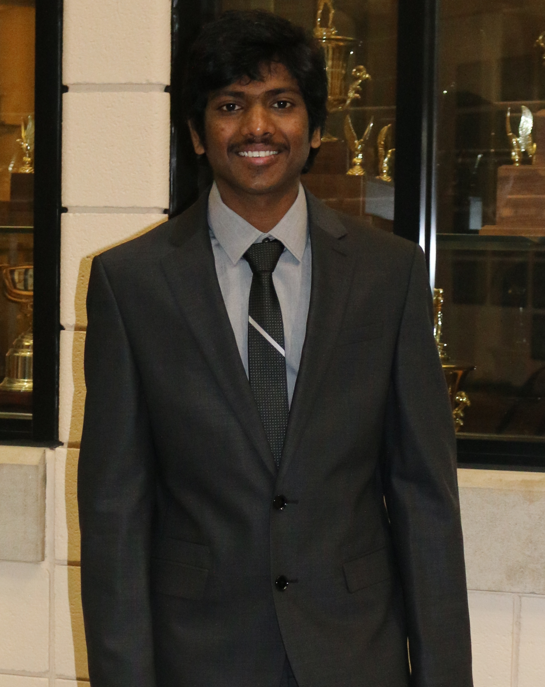

About Me

Web Developer
Skills
Scroll to see all Skill
Projects
Job Portal
HTML5
CSS
Javascript
JQuery
Bootstrap
AngularJS
MySQL
GIT
This portal helps the job seekers to apply for jobs for the listed companies. Jobs can be searched by applying filters like the job type, location and based on the experience or can search a particular job directly and can apply for it by uploading his resume. Admin can view all positions details, candidate details and the positions applied but the candidates individually.
Shopping Cart
HTML5
CSS3
Bootstrap
Javascript
JQuery
MYSQL
Our ecommerce application resembles today’s ecommerce website like EBay and Amazon. This application has three major role’s Admin, Seller, and Buyer. Admin can see all the transactions and also can search for a particular transaction directly or by using the filters. Seller can add/ delete the items and provide the shipping labels. Buyers can search for the items and can provide the feed back for the seller’s and products.
Document Search Engine
HTML5
CSS3
Bootstrap
JSP
JSON
Javascript
Oracle
The main purpose of this is to search a document in the university database. The searching can be done in category wise. Extracting the data and indexing is done with the help of Lucene and Tika. The user can login, upload documents and can view & download the documents uploaded by the other users.
Sterling Back Check
HTML5
CSS3
JavaScript
Bootstrap
JQuery
AJAX
MySQL
The project is related to background screening for the employees in the organizations. This helps to schedule an appointment, view previous medical records and customer service. Displaying the list of diagnostic center’s nearby location, using the location services. The generated reports are sent to the client directly.
E-Services
HTML5
CSS3
JSP
Javascript
MySQL
The project “E-SERVICES” is an online web application which is introduced to solve some of the real time problems that everyone is facing today. This project is mainly developed to improve the quality of electronic services especially in government sector. This project visualizes most of the important and necessary activities which are mandatory for all citizens who are living in the society. The vital role of this application is to make an appointment for various government activities. So that it makes each and every user to get their basic needs of society. The acknowledgement is provided in terms of E-mail.
Education
Kent State University, Kent, OH
AUG 2014 - DEC 2015
Master's of Science in Digital Sciences(Software Development) GPA: 3.82
Sri Sai Aditya Institute of Science and Technology, Surampalem, India
AUG 2010 - JULY 2014
Bachelor's of Technology(B.Tech), Computer Science
Contact


(571)-291-1096 vankayala.suraj@gmail.com